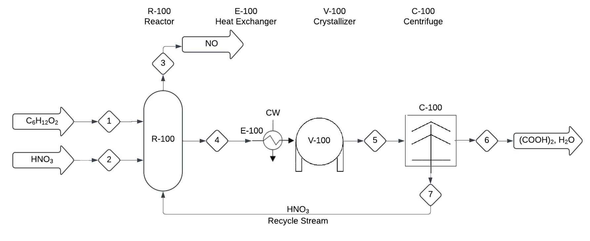

Oxalic Acid Production Plant (Sept. 2024 - Dec. 2024)
Through the UBC courses CHBE 220 and CHBE 201, myself and 3 others developed a production plant for producing oxalic acid. After comparing 3 different reaction pathways, we decided on one and created a process flow diagram (shown below), analaysing the economics of the process, separation strategies, and energy balances.

Process Flow Diagram for reactor, crystallizer and centrifuge in the oxalic acid process.